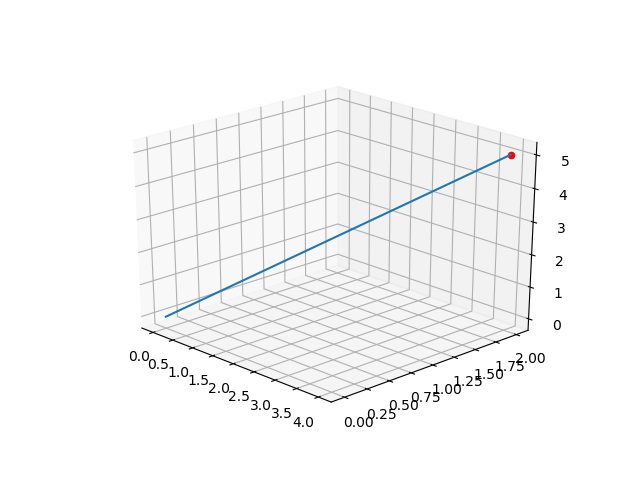
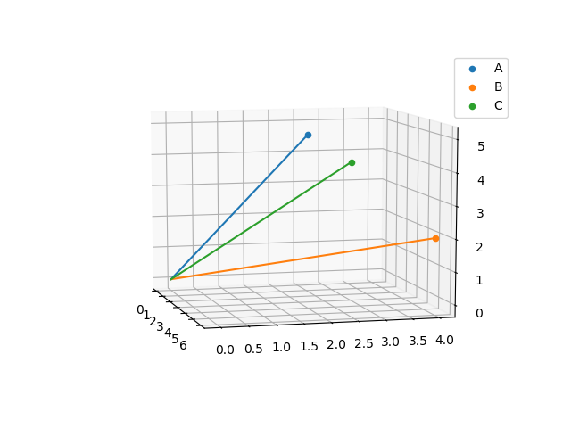
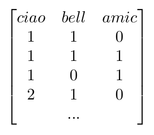
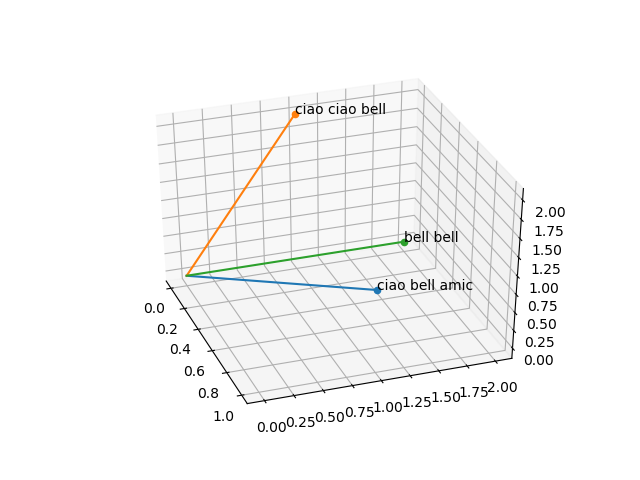
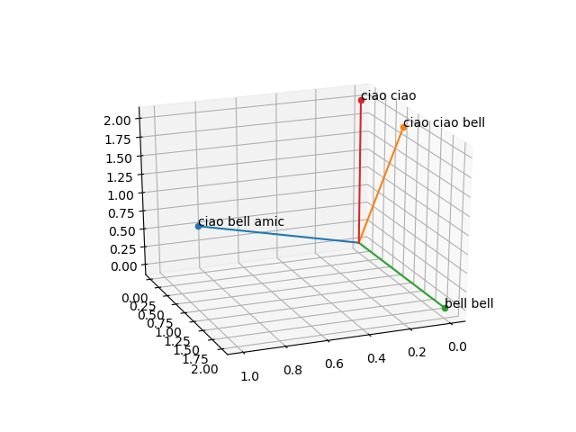
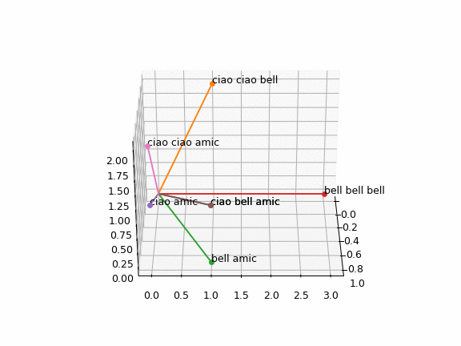

Da Frasi a Vettori
In questo articolo saranno spiegati i concetti base di analisi dei testi e di una delle tecniche più comunemente usate in linguistica computazionale ed NLP.

Usando Scikitlearn in Python, verrà mostrato come la distanza e il coseno di similitudine possono essere calcolati da diverse frasi, per scoprire quali sono più simili e quali meno.
Vettori
Sarò molto breve e funzionalista nel descrivere i vettori, ma se siete interessati ulteriormente, un qualsiasi libro di algebra lineare può dare qualsiasi approfondimento cerchiate.
Per ora, un vettore non è altro che un segmento (o anche solo un punto ma per comodità è meglio definirli così adesso) con una direzione ed una magnitudine (o lunghezza).
Se volessimo disegnarlo in 3D, un vettore avrebbe quindi tre coordinate: x, y e z, e lo trascriveremmo così:
[4 2 5]
Ora come ora, questo è solo un punto, ma se tracciamo il segmento che dal punto di origine [0 0 0] arriva a [4 2 5], abbiamo il nostro vettore per intero (dovremmo anche mettere una freccetta per indicare la direzione, ma limitiamoci al minimo).
Sarebbe quindi rappresentato in uno spazio 3D così:

Ottimo, immaginiamo adesso di avere tre vettori però, il secondo sarà B = [6 4 2] ed il terzo C = [3,3,4]:

Per misurare la similitudine fra questi vettori, basterà usare la formula del coseno di similitudine. Con questa formula conosceremo il coseno dell'angolo fra due vettori e, quindi, quanto due vettori sono simili tra loro. La formula è facilmente consultabile su wikipedia, si può benissimo calcolare a mano per questi vettori piccoli in 3D, ma per risparmiare un pò di tempo useremo la funzione cosinesimilarity di Scikit-learn.
Da frasi a vettori
Ok, come si applica tutta questa roba alle parole?
Facile, prendiamo due frasi di tre parole come "ciao bell'amico" e "ciao ciao bello". Abbiamo due frasi, entrambe di tre parole, ed il totale di parole uniche è praticamente 3, cioè: bell, ciao, amic. Eliminiamo le desinenze per comodità, dato che dire "ciao amico" e "ciao amica" non è poi così differente.
fatto ciò, possiamo creare una tabella dove ogni colonna corrisponde ad una delle parole (avremo quindi tre colonne) ed ogni riga corrisponde ad una frase (abbiamo due frasi, quindi due righe).
| FRASI | ciao | bell | amic |
| frase1 | 1 | 1 | 1 |
| frase2 | 2 | 1 | 0 |
Come possiamo notare, ogni casella corrisponderà al numero di volte che una parola appare in una frase. Aggiungiamo una terza frase "bello bello!", la punteggiatura così come il genere non ci serve, ed avremo la frase3:
| FRASI | ciao | bell | amic |
| frase1 | 1 | 1 | 1 |
| frase2 | 2 | 1 | 0 |
| frase3 | 0 | 2 | 0 |
Abbiamo tre vettori, ogni riga è un vettore e possiamo dire che ciao, bell e amic = x, y e z. Inoltre, proprio come prima, sono diversi tra loro. La domanda è: Quanto diversi fra loro?
Questa tabella è l'equivalente di una matrice, quindi, dove ogni riga corrisponde ad un vettore in 3D e possiamo aggiungere altre frasi che contengano solo queste tre parole, in qualsiasi ordine e quantità, per avere nuovi vettori 3D.

Vediamo però, adesso, con questi tre vettori quale è la situazione visivamente.
Usando Python
Per questo lavoro ci servono matplotlib, numpy e sklearn. Importiamoli quindi per prima cosa e poi mettiamo ogni frase in una variabile.
# per plottare in 3D import matplotlib.pyplot as plt from mpl_toolkits.mplot3d import Axes3D import numpy as np # per trasformare le parole in vettori come nella precedente matrice. from sklearn.feature_extraction.text import CountVectorizer from sklearn.metrics.pairwise import cosine_similarity a = "ciao bell amic" b = "ciao ciao bell" c = "bell bell"
Adesso, creiamo una lista contenente le frasi, creiamo un'istanza del CountVectorizer e diamogli le nostre frasi da trasformare nella matrice mostrata prima.
phrases = [a,b,c] cv = CountVectorizer() # diamo al CountVectorizer le frasi da rendere in vettori fitted = cv.fit_transform(phrases) # dobbiamo convertire l'oggetto in un array per poterlo visualizzare e sfruttare meglio matrice = fitted.toarray()
Se, nella console di python decidessimo di vedere la variabile matrice, ci sarà ritornato questo:
array([[1, 1, 1], [0, 1, 2], [0, 2, 0]], dtype=int64)
Questa è la nostra matrice di prima, ogni sua riga è uno dei vettori ed ogni vettore è una delle frasi.
Ok, adesso cerchiamo di plottare questi vettori. Potremmo ovviamente inserire i valori di ogni vettore manualmente e singolarmente. Sarebbe facile visto che sono solo 3 valori per vettore e per di più numeri simili, ma cerchiamo di rendere la cosa più flessibile così che dopo potremo usare il codice con altre nuove frasi senza dover far troppo manualmente.
# creiamo una figura con matplotlib, sarà in 3D fig = plt.figure() ax = fig.add_subplot(111, projection='3d') # adesso andremo attraverso ogni vettore nella matrice, per ogni vettore # useremo il primo valore come x, il secondo come y ed il terzo come z for x in range(len(matrice)): # questo metterà ogni punto sul piano. ax.scatter(matrice[x][0], matrice[x][1], matrice[x][2]) # se vogliamo, possiamo scrivere la frase vicina al punto per orientarci ax.text(matrice[x][0], matrice[x][1], matrice[x][2], phrases[x]) # con questo disegneremo una linea dal punto 0 ad ogni vettore. ax.plot([0, matrice[x][0]],[0, matrice[x][1]],[0, matrice[x][2]]) plt.show()
Avremo, come risultato, un grafico 3D simile al seguente, che potremo ruotare come preferiamo.

Chiaramente le frasi sembrano distanti fra loro, ma quali sono più o meno simili?
per calcolarlo, usiamo adesso la funzione di scikitlearn e vediamo di ottenere il coseno di similitudine per ogni coppia:
counter = 0 # iteriamo attraverso ogni vettore della matrice, aka ogni frase while counter < len(matrice)-1: # otteniamo il coseno di similitudine fra la frase corrente e quella successiva e precedente print("Similarity between:", phrases[counter], " : ", phrases[counter+1]) print(cosine_similarity([matrice[counter]], [matrice[counter+1]])) print("Similarity between:", phrases[counter], " : ", phrases[counter-1]) print(cosine_similarity([matrice[counter]], [matrice[counter-1]])) counter += 1
Avremo dei doppioni nei risultati, ma è il metodo più veloce per ottenere i risultati in modo facilmente replicabile con nuove frasi.
Se eseguiamo nuovamente il codice, vedremo che per le nostre frasi:
Similarity between: ciao bell amic : ciao ciao bell 0.77459667 Similarity between: ciao bell amic : bell bell 0.57735027 Similarity between: ciao ciao bell : bell bell 0.4472136 Similarity between: ciao ciao bell : ciao bell amic 0.77459667
Le frasi più simili sono "ciao bell amic" e "ciao ciao bell", mentre le meno simili sono "ciao ciao bell" e "bell bell"
Proviamo ad aggiungere "ciao ciao" come frase e vediamo che risultato abbiamo.

Già dall'immagine qualcosa è intuibile.
Similarity between: ciao bell amic : ciao ciao bell 0.77459667 Similarity between: ciao bell amic : ciao ciao 0.57735027 Similarity between: ciao ciao bell : bell bell 0.4472136 Similarity between: ciao ciao bell : ciao bell amic 0.77459667 Similarity between: bell bell : ciao ciao 0. Similarity between: bell bell : ciao ciao bell 0.4472136
Possiamo anche salvare il nostro grafico, volendo, in formato gif come animazione:
def rotate(angle): ax.view_init(azim=angle) line_ani = animation.FuncAnimation(fig, rotate, interval=50) line_ani.save('rotation.gif', dpi=90, writer='imagemagick')

Shwifty
Conclusione
Provate ad aggiungere altre combinazioni, magari anche ripetendo "ciao" solo 10 volte per vedere quale il risultato del cosine similarity sarà.
Quando però immaginiamo di usare questo metodo su un libro ad esempio, avremo vettori di n dimensioni, dove n è uguale al numero di parole uniche in tutti i libri messi insieme.
Ovviamente noi possiamo vedere e rappresentare direttamente solo in 3D (e neanche così bene alle volte), e immaginare un vettore di 5 mila dimensioni non è esattamente facile, ma le formule come quella del coseno di similitudine possono ancora essere applicate, il solo aggiungere una quarta parola diversa al nostro esempio di oggi rende impossibile rappresentare direttamente i vettori di 4 dimensioni risultanti.